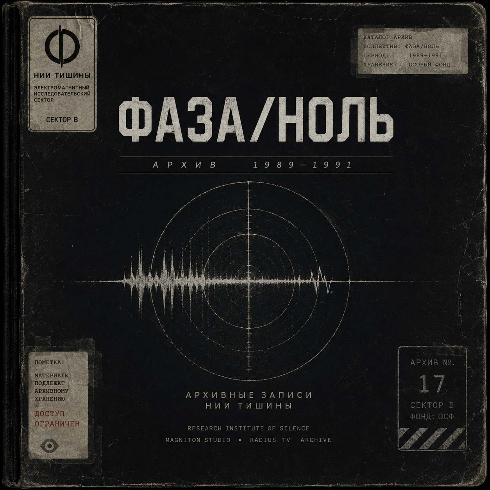
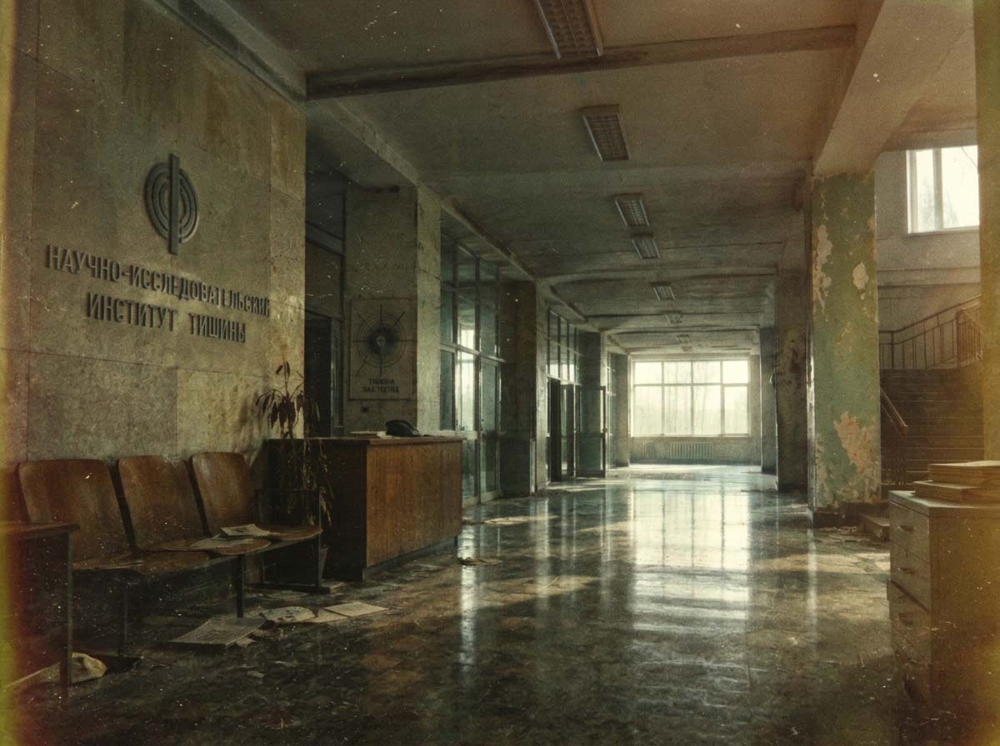
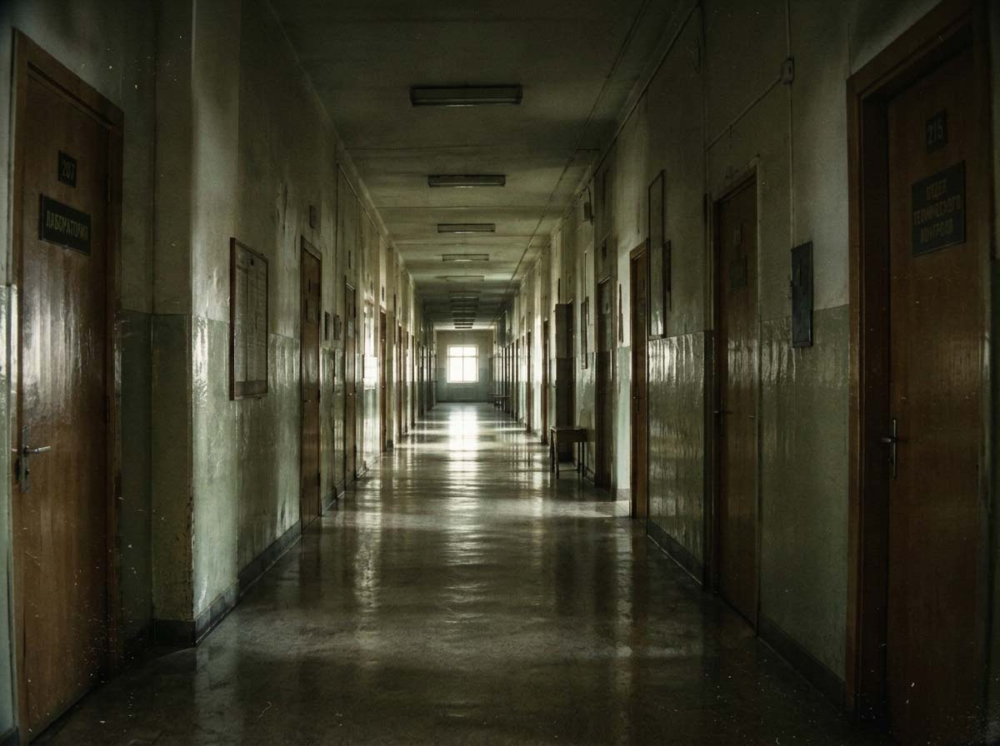
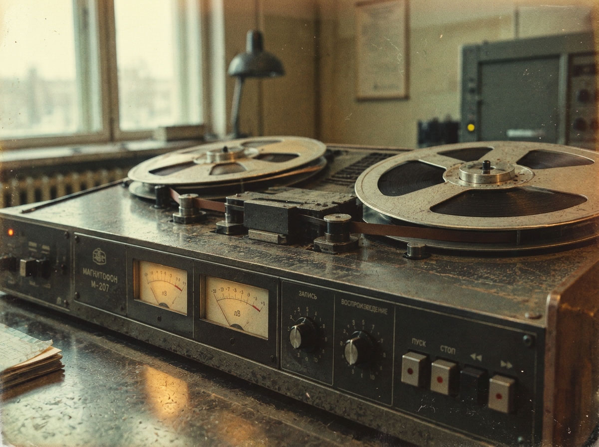
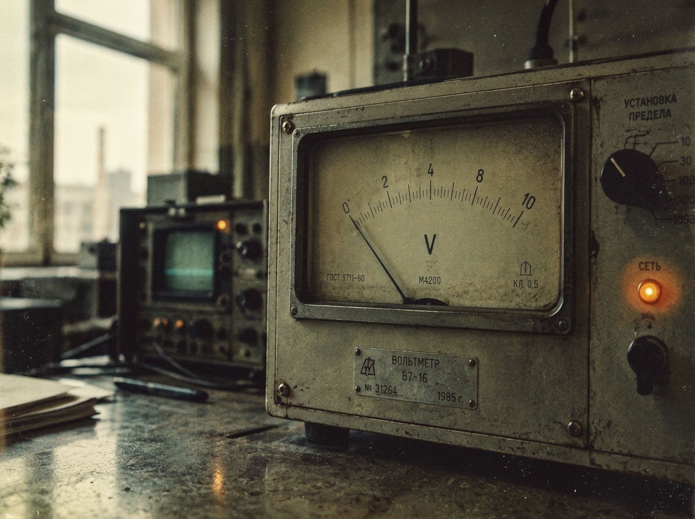
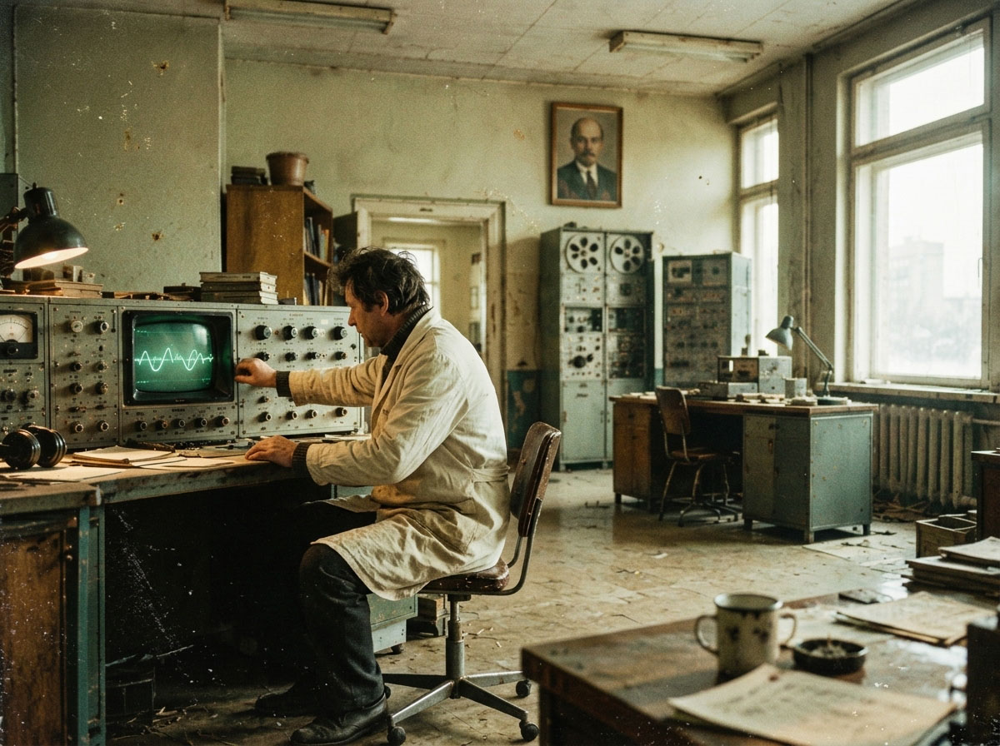

Phase/Zero
Synthpop · Coldwave
AVAILABLE / LISTEN
(ФАЗА/НОЛЬ) — recovered recordings attributed to the fictional Institute of Silence. Synthpop, coldwave and Sovietwave textures emerge through magnetic tape degradation, laboratory signals and fragments of a research archive that was never meant to be found.
LISTEN TO PHASE/ZERO
Also available through the RADIUS ARCHIVE distribution network on TikTok, Pandora, KKBOX, iMusica, iHeartRadio, Anghami, JioSaavn, AWA, Tencent Music, NetEase Cloud Music, Facebook Audio Library, Mixcloud, Boomplay, Snap, Peloton, Audiomack, JOOX, FLO, Tuned Global, YouTube Content ID and Facebook Rights Manager.
Архивные записи НИИ Тишины (1989–1991)
- 01 НИИ Тишины
- 02 Между фазой и нулём
- 03 Несуществующий сектор
- 04 Архив №7
- 05 После отключения
- 06 Несуществующий сектор (Data Ghost Remix)
Зона отчуждения (Мини-Альбом, 1999)
- 01 Зона отчуждения
- 02 Пустой НИИ
- 03 Последний оператор
- 04 Формула выбора
- 05 Пустой НИИ (Closed Circuit Remix)
> FOUND IN ARCHIVE: Laboratory photographs, 1986–1991.

FIG. 01 — Institute Lobby, 1986
FIG. 02 — Empty Corridor, 1989
FIG. 03 — Magnetic Tape Recorder, 1989
FIG. 04 — Voltmeter V7-16, 1985
FIG. 05 — Operator at control panel, 1991> DECLASSIFIED DOCUMENTS: Fragments of the archive.
ARCHIVE ANOMALY No. F0-1986
«During the digitization of the RADIUS Television Center catalog, an unusual entry connected to the synth-pop duo PHASE/ZERO was discovered. According to surviving archive records, a composition titled "Non-Existent Sector" was recorded on November 12, 1986 at Magniton Studio, an experimental recording laboratory operated by Research Institute No. 9 (NII-9).
The anomaly is that the first documented appearance of PHASE/ZERO dates to 1989, nearly three years later. A recent inspection of the archive storage facility led to the discovery of several additional magnetic tapes marked PHASE/ZERO, none of which had previously been included in the digital catalog.»
— From the RADIUS Television Center internal log, undated.
RESEARCH INSTITUTE OF SILENCE (1989)
«Recovered from internal storage reels attributed to Magniton Studio. The original cassette contained unstable channel levels, magnetic system noise, and intermittent high-frequency degradation. Restoration was limited to basic digital reconstruction while preserving tape artifacts and structural imperfections of the source recording.
The composition functions as a monitored transmission: voice and signal remain trapped inside an isolated laboratory environment where silence is treated as measurable data.»
— Magniton Studio, Sector B, 1989.
AFTER DISCONNECTION (1991)
«In August 1991, the electromagnetic research sector was officially disconnected from power, documentation was seized, and the premises were sealed. On the same day, all regular transmissions by PHASE/ZERO ceased. At least — officially.
However, years later, during the digitization of archival media, another recording was discovered. There were no names of performers on the packaging. No technical marks. No registration number. Only the date: 1991. And a pencil note: After Disconnection.»
— Archive of NII of Silence, declassified fragment.
THE EXCLUSION ZONE (1999)
«By the end of the 1990s, the NII-9 research complex had effectively ceased to exist. The laboratories stood empty, equipment was gradually falling into disrepair, and the archives remained without maintenance. Some rooms had been sealed, others simply abandoned. Magnetic tapes, laboratory logs and documents from the institute's final years survived only in fragments.
It was during this period that the new PHASE/ZERO material was recorded — recordings made after the complex had effectively ceased operations. Unlike the earlier archives from the late 1980s, there is almost no sense of an active laboratory here. Cold synthesizers, mechanical rhythms and voices emerge against the backdrop of empty corridors, closed offices and disconnected systems.»
— Magniton Studio Archive, 1999.